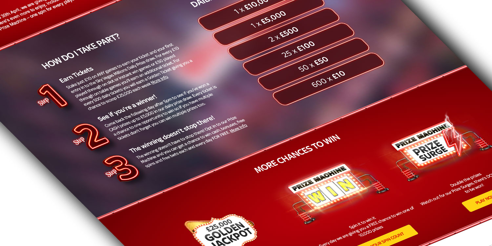
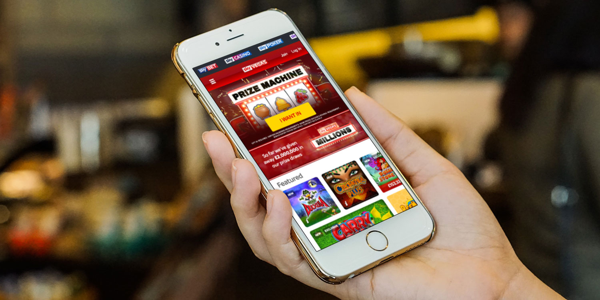
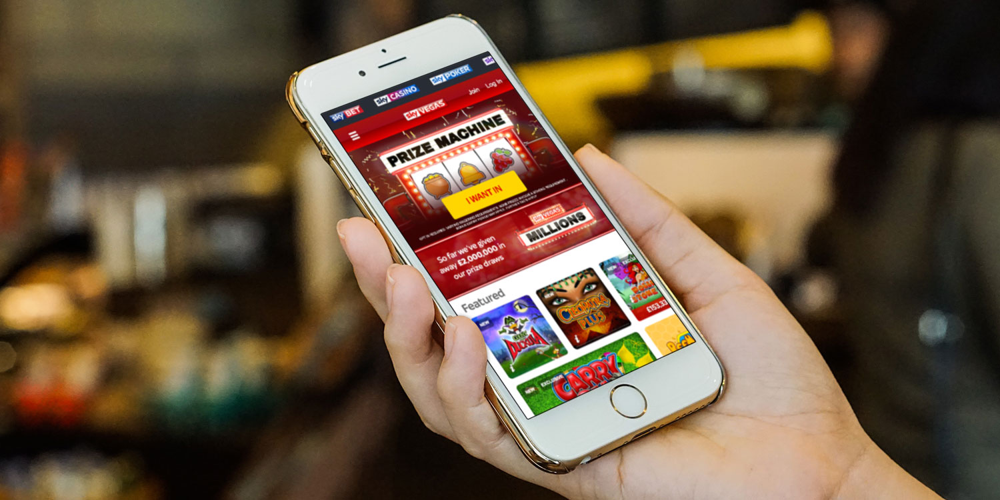

Creating an engaging online casino
At the heart of the UKs online gaming market Sky Vegas had the mission to bring customers the immersive experience of a casino into their homes and on the go by being the most thrilling place to experience Vegas without actually having to visit. Since it’s one of the top visited sites in for this in the UK players expectations were high and they expected an experience worth their time.
Joining the company at a critical time Sky Vegas was different from its competitors in that you didn’t need to download software to play the games. This meant that the whole experience was in the browser and allowed us to take advantage of the latest web technologies. In a market that was rapidly becoming mobile first and an ever evolving catalogue of games the company decided to invest in rebuilding the product from the ground up to bring a truly responsive experience for customers.
I worked as a Digital Designer to interpret the business's goals and bring an experience that would keep customers returning to Sky Vegas. This involved being at the heart of key stakeholder meetings between various areas of the business, from Product Owners to Marketing their needs all needed to be addressed with such a huge investment going into the project.
Helping to lead and run design jams which created various journeys and possible solutions we could take, technological limitations at the time had to be considered, so although lots of fantastic ideas were generated, I then had to evaluate which ones were actually implementable by the development team. I created various prototypes which we used to test on users and learn how they would interact with the new platform, especially since it was such a drastic change to how the current site worked.
We decided that the graphics of the games were to take centre stage, bringing all the colours of Vegas onto the site and make the process of a customer finding a game easier. Although user testing showed that most users preferred to jump straight into a game and experience it for themselves, we still had to consider how all the content of the game would sit within the site: how to play, rules, win lines and complex bonus round information all had to be displayed in a way which wouldn’t overwhelm the user, but instead allow them to easily read up on the bits they might want to find out more on.
Creating a design system that complemented the brand guidelines that would be used to facilitate consistency around the site was developed and presented to the business. This meant that the developers and marketing teams could make use of key components easily without the overhead of needing dedicated design resource.
Being part of an agile team meant that we could iterate quickly based on A/B test results and make sure we were meeting business targets while working on new experiments. I was able to create various wireframes which would use the design style guide where I would then build new navigation components. This would allow me to gather data on how best to group games and which were the most efficient journeys that allowed the business to deliver the most relevant games to customers without them needing to filter through the hundreds of games available.
During the project we also brought the in-game experience in house as the business wanted to unify the experience across all the various games provided by multiple game providers into a common experience. This involved me working closely not only with UX Team doing user research studies but other areas of the business like legal and compliance, since there are strict regulations around gambling games.
The aim of the research was to create an experience which targeted key personas the business was marketing to. These would be used to personalise the on-site experience and promotional campaigns.
Through several iterations I was able to deliver a clean and simple in game UI overlay which housed the information that was needed which also being adaptive to devices to allow areas where the business could include additional components that would be of interest to that customer where space allowed.
 
